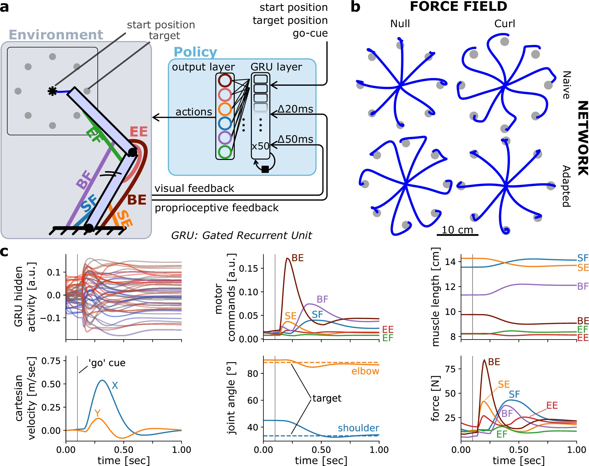

We use computational models of neuromuscular systems such as the upper limb to test hypotheses about how the brain controls voluntary movement, and how motor learning is achieved. An emphasis is placed on including realistic physiological, mechanical and neural properties of the neuromuscular system. We use models to study the form of time-varying control signals to muscles that the central nervous system must generate to produce voluntary movement. We combine model predictions with empirical measurements of limb kinematics and patterns of muscle activation measured using electromyography. Recently we have begun to develop artificial neural network models that can be trained to control physiologically realistic neuromuscular models of upper limb movement (MotorNet). We use them to test hypotheses about how information for skilled movement and for motor learning is represented across a distributed network of computational units.
